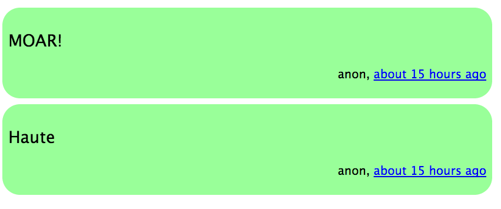

Overview
In this assignment, you will be writing a simple but useful system for pushing and pulling short messages. Messages can be sent from any device or application, including various mobile apps.
Instructions
Create a Rails app that has one controller, two HTML views, and two models for pushing and pulling short messages. NOTE: You are not allowed to use Rails scaffolding for this assignment!
The Models
This app shall have two models with the following fields and constraints:
- App
app_title(string) - Application title. Example: Messenger-Android. This field cannot be empty.description(text) - Description for application. Example: A simple messaging app for Android. This field cannot be empty.active(boolean) - Whether this app is active (i.e., deleted). By default, all apps are active.
- Message
app_id(int) - The app ID where the message came from. This field cannot be empty.content(string) - The message. Must be at most 160 characters long. This field cannot be empty.username(string) - The creator of the message. Must be between 3 and 60 characters long, inclusive. Only alphanumeric, underscore, and dash characters allowed. This field cannot be empty.active(boolean) - Whether this message is active (i.e., deleted). By default, all messages are active.
IMPORTANT: An app can have many messages coming from it.
Seeding of Data
Using the db/seeds.rb file, seed the apps database table with the following information:
app_title | app_description ---------------------------------- ios | From iOS app android | From Android app web | From default web app unknown | From an unknown source
The app_id for each app will be automatically generated with an auto-incremented number.
The Controller
Only one controller shall exist: messages_controller, with three actions:
index- Get all active messages, render in HTML or JSON format (more details below).create- Creates message via JSON format. Example on creating a message using curl:curl --data 'message[username]=britney&message[content]=Hello&message[app_id]=1' http://127.0.0.1:3000/messages. Data creation via HTML form post is not allowed.show- Get one message via specified ID, render in HTML or JSON format.
You must also configure the root of your web application to point to the index action of messsages_controller.
The Index HTML View
The index HTML view (e.g., via http://localhost:3000/) displays all active messages in descending order: newest messages at the top to oldest message at the bottom. You must also poll the server for new messages at a duration of your choosing, and display only the newest messages from the top. That is, you are not allowed to re-render the entire page (i.e., refresh) and cannot duplicate the display of messages.
Display of Message in Index or Show HTML Views
When you display a message via show or index actions in HTML format, you must display the content, username, and created at time in time ago format, in English.. Example:

The Routes
In the end, your routing table should look something like this:
message GET /messages(.:format) messages#index {:format=>true}
POST /messages(.:format) messages#create {:format=>true}
/messages/:id(.:format) messages#show
root / messages#index
Getting Started
rails new messagehubrails generate model message ...rails generate model app ...rails generate controller messages ...
Notes
- You are strongly encouraged to use jQuery.
- For now, you can use sqlite as the database for the application.
- There is a jQuery plugin called
timeagothat can convert a timestamp to the time ago in English words.
Submitting the Assignment
Push all the files to the private repository that I created for you in a folder named a2. Say that your private repository is named mchow-comp120, make sure all the files are pushed to mchow-comp120/a2.
I also strongly encourage you to push your app to Heroku. Should you push your app to Heroku, please put Heroku URL in your README. You must still push your source code to GitHub.
Assessment
- (1 point)
READMEin either text or markdown format - (1 point) Assignment pushed to private GitHub repository to
a2directory - (2 points) The
Appmodel with validations and associations - (2 points) The
Messagemodel with validations and associations - (1 point)
appstable is seeded with initial data - (2 points) The
messages_controllerwith the three actions - (1 point) Create message via POST and JSON format to
createaction - (1 point) Root of app is set to
indexaction ofmessages_controller - (3 points) The index HTML view with polling and timestamp in English, time ago format
- (1 point) The show HTML view with timestamp in English, time ago format